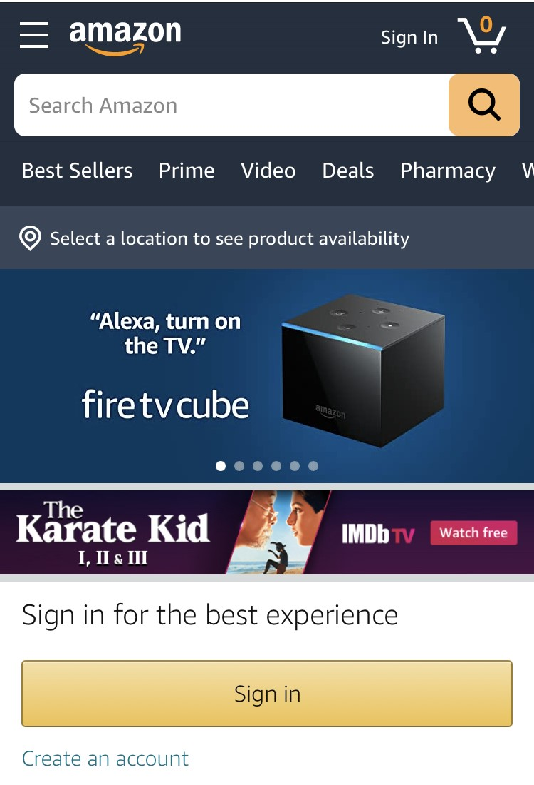

Rule of Thirds
The Ohio State University
The main image on The Ohio State University website does a good job at presenting the rule of thirds. In their image, the main two things they want you to see are in the top left crosshairs and the top right. Approximately 41% of the viewers eyes will start at the top left and 20% will start at the top right.
Hick's Law
eBay
On eBay's mobile homepage they effectively exhibit Hick's Law. As you can see they keep it short and simple on their page. Rather than having a million things to choose from like categories, they just have 3 main buttons. They have a search bar at the top and then 3 more icons in the header. It's very basic and creates an optimal user experience.
Fitts's Law
Amazon
Amazon's mobile webpage does a great job at displaying Fitts's Law. The biggest button on their screen is the "Sign in" button because that is what they want you to go to and click on first. Directly underneach it is the "Create an account" button so that users can see those things are related. The search button and search bar are the next biggest things for the same reasons.